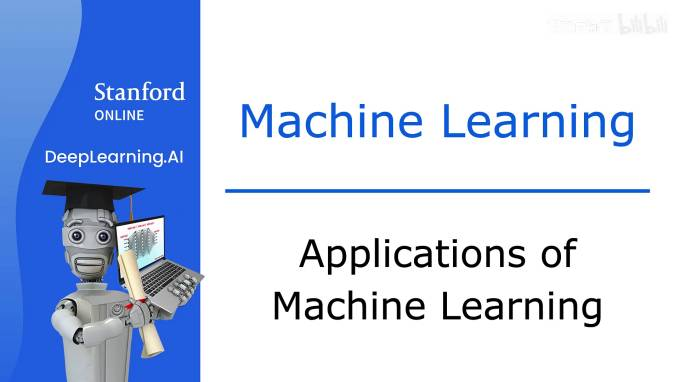
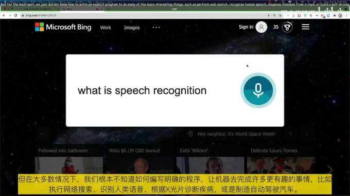

在本课程中，你将了解机器学习领域的最新进展，并亲自实践实现机器学习算法。00:02

你将学习最重要的机器学习算法，其中一些恰好被当今的大型人工智能或大型科技公司所使用，并且你将了解人工智能领域的最新水平。00:11
不过，除了学习算法之外，在本课程中，你还会学到所有重要的实用技巧和方法，使算法能够良好运行，并且你将亲自实现它们，看看它们是如何工作的。00:26
那么，为什么机器学习如今被如此广泛地应用呢？00:42
机器学习最初是作为人工智能的一个子领域发展起来的。00:46
我们想要构建智能机器，结果发现，有一些基本的事情我们可以通过编程让机器去完成，例如，像在 GPS 导航仪中那样，找到从 A 点到 B 点的最短路径。00:52
但在大多数情况下，我们根本不知道如何编写明确的程序，让机器去完成许多更有趣的事情，比如执行网络搜索、识别人类语音、根据 X 光片诊断疾病，或是制造自动驾驶汽车。01:08

我们知道如何完成这些事情的唯一方法，就是让机器自己去学习。01:25
对我来说，当我创立并领导 Google Brain 团队时，我致力于解决诸如语音识别、为谷歌地图和街景图像服务的计算机视觉以及广告等问题。01:33
或者在我领导百度人工智能团队时，我处理过从增强现实的人工智能、竞争性支付欺诈防御到领导自动驾驶汽车团队等各类问题。01:46
最近，在由斯坦福大学资助的人工智能公司 Landing AI，我一直在从事制造业、大规模农业、医疗保健、电子商务及其他领域中的人工智能应用开发工作。01:58
如今，有数十万甚至数百万人致力于机器学习应用，他们都能告诉你关于他们机器学习工作的类似故事。02:13
当你掌握了这些技能后，我希望你也会发现，涉足各种令人兴奋的不同应用领域，甚至可能涉足不同的行业，是件非常有趣的事。02:23
事实上，我觉得很难想到有哪个行业是机器学习在当下或不久的将来不太可能产生重大影响的。02:35
展望更遥远的未来，包括我在内的许多人，都对有朝一日能建造出像你我一样智能的机器这一人工智能梦想感到兴奋。02:45
这有时被称为通用人工智能，简称 AGI。02:56
我认为通用人工智能被过度炒作了，我们距离那个目标还有很长的路要走。03:01
我不知道实现它需要五十年、五百年还是更长的时间，但大多数人工智能研究人员相信，接近这一目标的最佳方法是使用学习算法，这些算法或许能从人脑的工作方式中获得一些启发。03:08
你还会在本课程的后续内容中，更多了解到关于这一对通用人工智能的探索。03:25
根据麦肯锡的一项研究，预计到二零三零年，人工智能和机器学习每年将额外创造十三万亿美元的价值。03:33
尽管机器学习已经在软件行业创造了巨大的价值，但我认为，在软件行业之外的领域，如零售、旅游、交通运输、汽车、材料制造等行业，还存在着可能更为巨大的、尚待创造的价值。03:45
由于在众多不同领域存在着大量尚未开发的机会，如今对这些技能的需求巨大且未得到满足。04:06
这正是学习机器学习的大好时机。04:16
如果你觉得机器学习应用令人兴奋，希望你能坚持学完这门课程。04:23
我几乎可以保证，你会发现掌握这些技能是非常值得的。04:27
在下一个视频中，我们将探讨机器学习的更正式定义，并开始讨论机器学习问题及算法的主要类型。04:33
你将掌握一些主要的机器学习术语，并开始了解有哪些不同的算法，以及各自在什么情况下适用。04:46
那么，让我们继续观看下一个视频吧。04:57